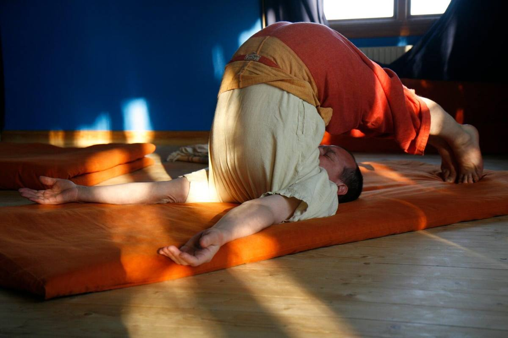
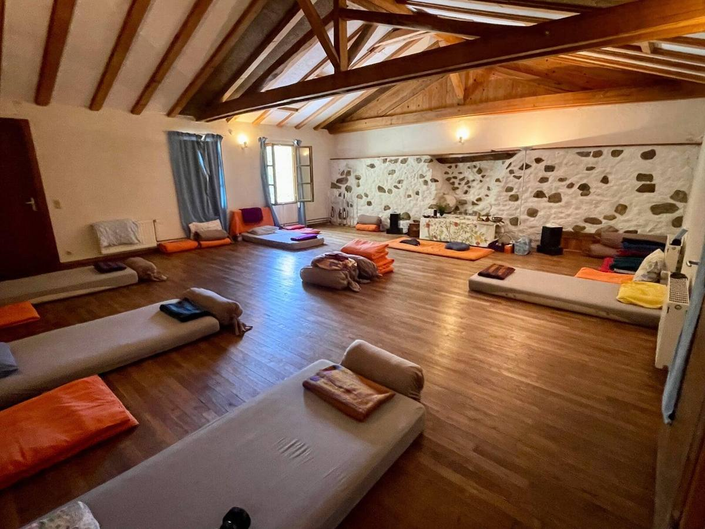
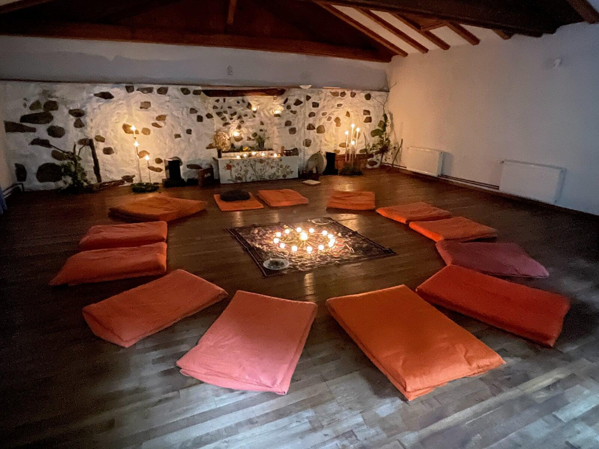
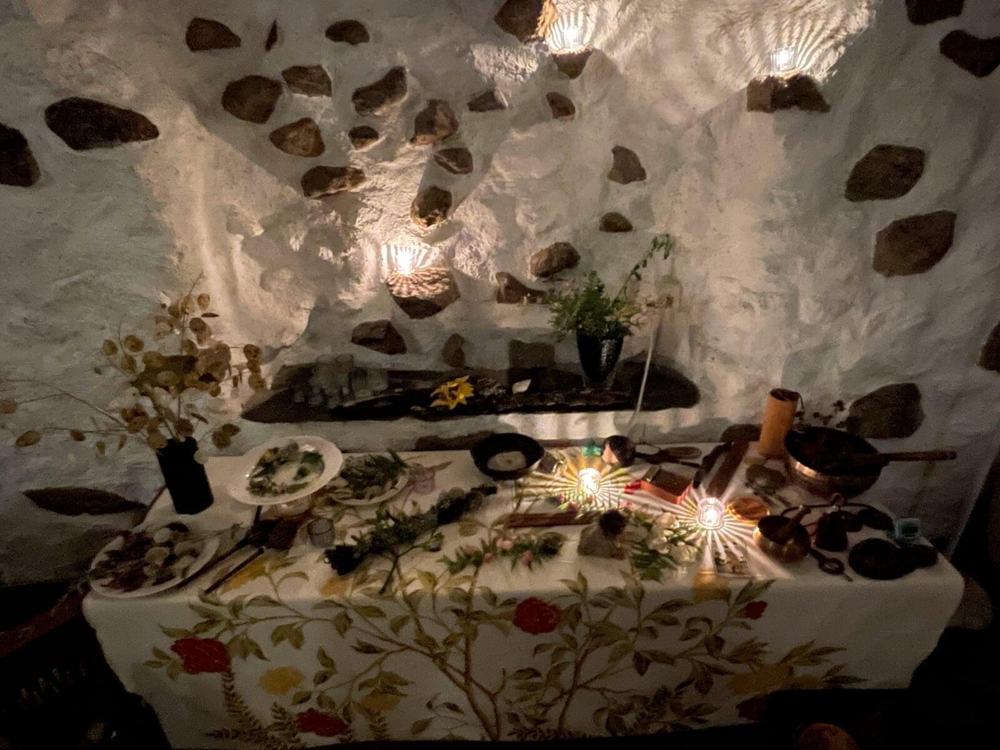
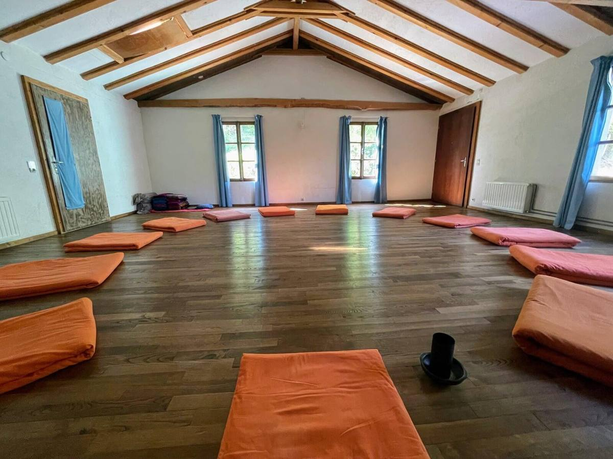
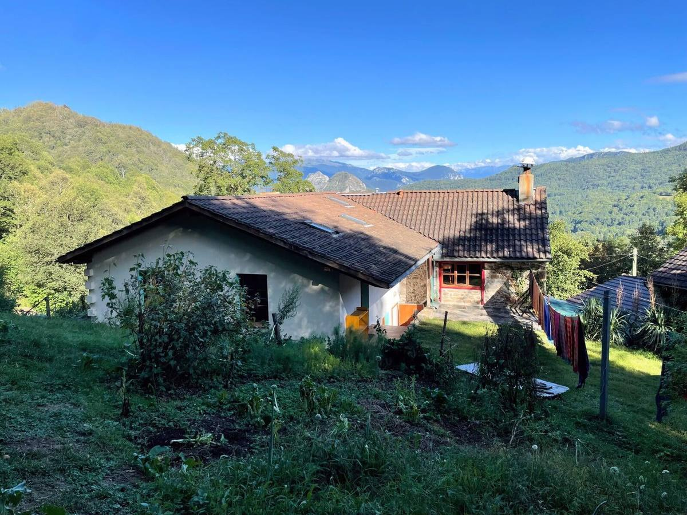
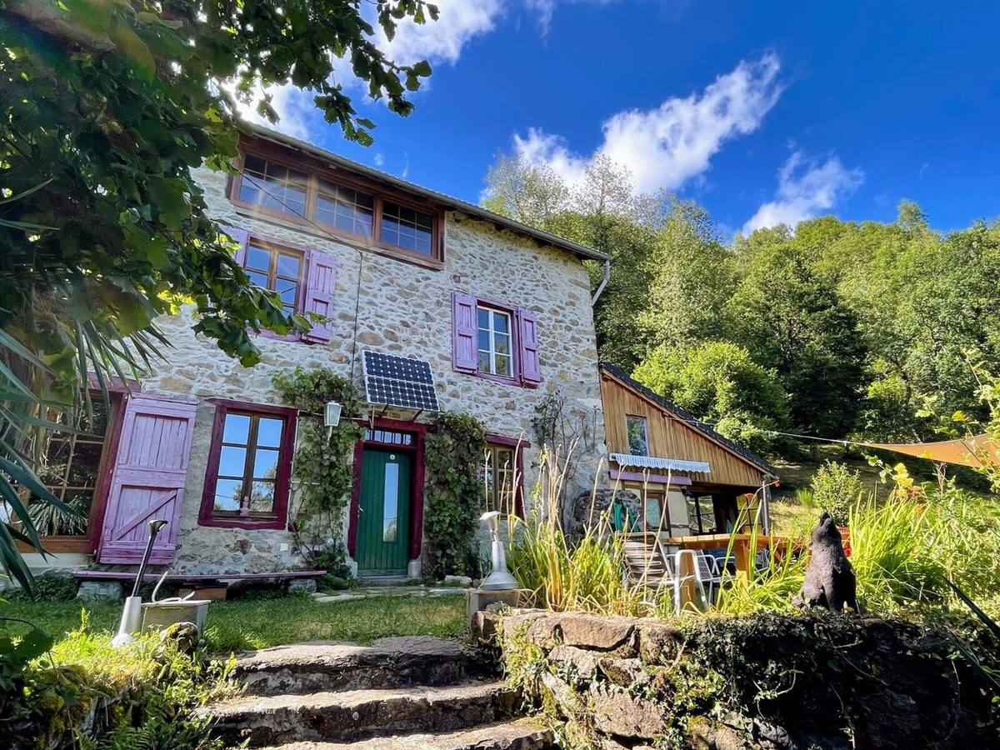
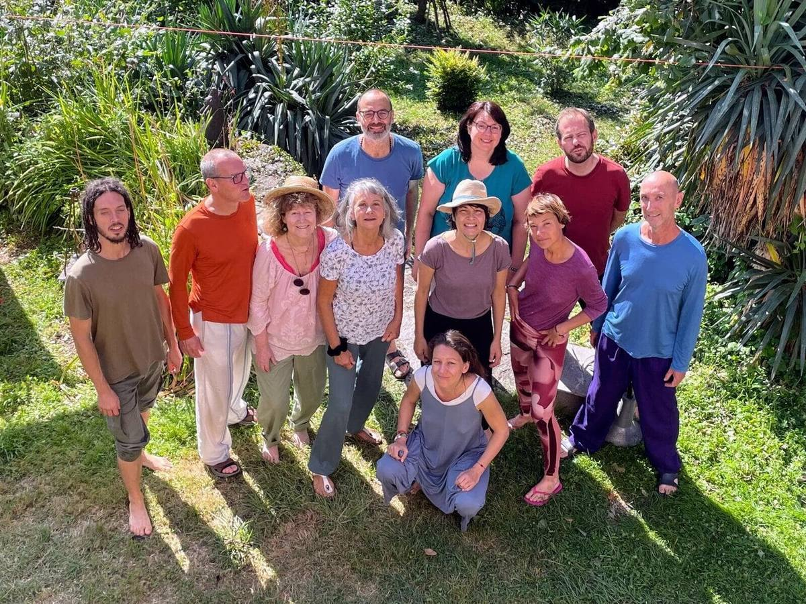
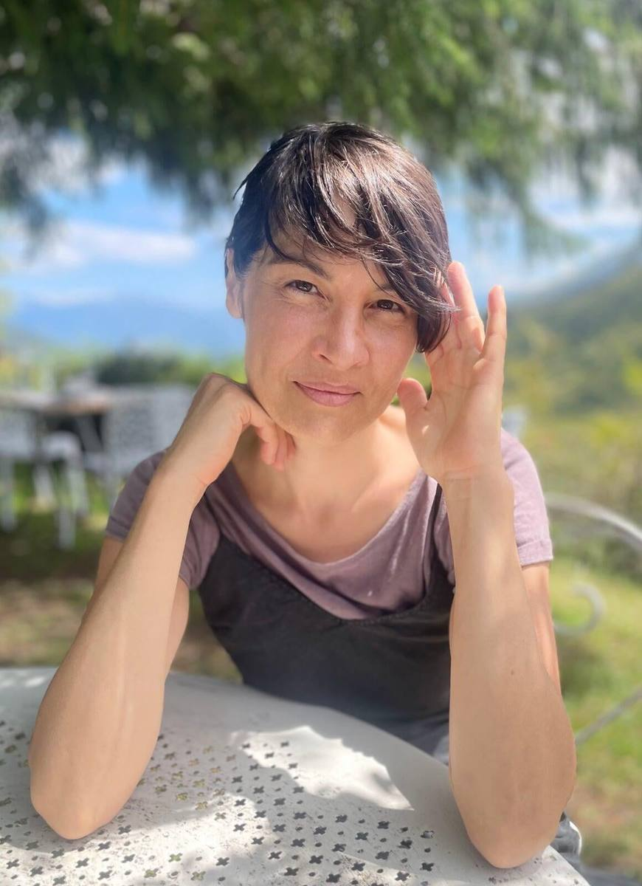

Asanas
Postures physiques pour renforcer, délier et éveiller le corps
Reconnectez avec vous-même !
(dates à venir)
Vivre la liberté de la Transe et l'ancrage d'un Yoga ancestral pour aller au cœur de Soi !
S'appuyant sur la structure et le cadre éprouvé des retraites traditionnelles créées par l'école Yoga et Méditation de Swami Janakananda qui inclut toutes les dimensions du Hatha Yoga, ainsi que sur la pratique d'un Yoga plus contemporain (Vinyasa et Yin Yoga), ces retraites vous proposent d'élargir et d'approfondir l'exploration de la conscience en y associant la respiration holotropique et d'autres techniques de transe.
L'alliance de ces pratiques permet de se recentrer, d'accéder à une vision de Soi plus large, et de s'ouvrir aux autres à partir d'un espace intérieur à la fois apaisé et ouvert au champ des possibles.
Ces retraites ont pour objectif de vous reconnecter à vous-même : à la fois au corps, aux émotions et à vos rythmes naturels (sommeil, alimentation…), et au retour, de prolonger un état de calme, de bien-être et de recul avec un nouvel élan.
Chaque jour, vous explorerez un ensemble cohérent de pratiques issues du Hatha Yoga traditionnel et de formes plus modernes comme le Vinyasa et le Yin Yoga. Ces pratiques sont guidées et accessibles à tous les niveaux :
Postures physiques pour renforcer, délier et éveiller le corps
Techniques de respiration consciente
Exercices de concentration
Relaxation profonde guidée
Méditation du silence intérieur
Actions conscientes au service du collectif (cuisine, entretien, etc.)
Des temps de silence dédiés au calme intérieur, à l'écoute subtile


La respiration holotropique, développée par Stanislav Grof, est une méthode puissante d'exploration de la conscience. Par un souffle intensifié et l'usage de musiques évocatrices, elle permet l'émergence spontanée d'expériences transformatrices et libératrices, sur les plans physique, émotionnel, psychique et spirituel.
Cette pratique s'inscrit dans un cadre sécure, soutenant, respectueux, où tout ce qui se manifeste peut être traversé en confiance. Une journée entière lui sera consacrée pendant le stage.
D'autres pratiques de transe viendront enrichir l'exploration, et seront proposées à des moments clés du processus.
Vous vivrez le processus de ces retraites dans un cadre privilégié, coupé des stimulations habituelles (média, téléphone, Internet, etc.) et du monde extérieur, le tout dans l'enceinte d'un lieu magnifique et protecteur.
À 900 m d'altitude et sans voisinage direct, La Luna s'inscrit au cœur de la nature des Pyrénées ariégeoises, bercée par les oiseaux et un petit ruisseau. De très belles balades dans la forêt et dans la montagne sont proposées directement au départ du gîte.
Vous serez hébergés dans des chambres spacieuses de 2 à 4 personnes.





| 07h00 – 09h00 | Yoga (asanas + pranayama) |
| 09h00 – 09h30 | Petit déjeuner léger |
| 09h30 – 11h00 | Karma yoga (cuisine, entretien, projets La Luna) |
| 11h00 – 12h30 | Yoga nidra et méditation |
| 12h30 – 16h30 | Déjeuner et temps libre (randonnée, baignade, création…) |
| 16h30 – 18h30 | Yoga ou pratique de transe |
| 18h30 – 20h00 | Dîner et temps libre |
| 20h30 – 22h00 | Surprises |
Être souple, savoir retenir son souffle, être en grande forme physique, avoir déjà pratiqué intensément ; ou encore se sentir à côté de ses baskets, rechercher un sens à la vie, être en quête d'un au-delà… rien de tout cela n'est nécessaire.
Ce qui est important c'est votre envie, votre décision, de prendre ce temps pour plonger en vous-même, et par vous-même, en vous appuyant sur l'enseignement pour aller au cœur de celle ou celui que vous êtes vraiment.
Participer, c'est venir l'esprit ouvert, quelles que soient vos expériences et pratiques antérieures, et prendre totalement part, en confiance, au processus de la retraite même si elle peut vous pousser dans vos retranchements. Chaque moment a son rôle, son importance.

J'ai trouvé ce moment de retraite extrêmement dense, intense, et fort. L'organisation du stage, de sa progression par Marina et Jean-François était magnifique. L'approche en douceur de la respiration holotropique et de la transe était très encadrée et sécurisante : une véritable découverte, musique, sensations, ouverture de l'espace et du temps. Et la grande variété des techniques, deux formes de Yoga au moins, la respiration, la danse dans des exercices proposés par Marina, ou libre avec le groupe, la musique, puis la transe. Et le groupe embarqué dans cette aventure, tous des gens formidables avec lesquels on fait connaissance à son rythme. Tout ça dans un lieu magique. La magie de la semaine et des rencontres s'est prolongée tout mon été. Merci encore Marina et Jean-François et tous ceux avec qui j'ai partagé cette expérience inédite et très puissante.
J'ai eu la chance de participer à la retraite Yoga Transe de l'été 2023 dans les Pyrénées avec Marina et Jean-François et ce fut une expérience exceptionnelle. L'association du yoga et de la respiration holotropique dans un cadre naturel magnifique et avec un groupe bienveillant permet de grandes avancées sur le chemin de la connaissance de soi, de la reconnexion au corps et de notre humanité partagée. Mille mercis !
Merci pour tout, pour le stage, votre présence, pour tout ce que j'ai pu vivre et apprendre avec vous. Ça m'a fait faire quelques traversées (…) je commence à mesurer ce que cette retraite a touché en moi. Pourtant, j'ai vraiment eu du mal, avec à peu près tout sauf avec la nourriture qui était juste excellente 😂 ! J'ai plein de gratitude, merci de tout cœur de m'avoir fait découvrir cela ! Sur le tapis, j'ai pesté plusieurs fois que plus jamais je ne ferais ce genre de stage, que le yoga et la méditation, c'était pas pour moi, et là je commence à réaliser combien ça m'a fait du bien, et oui je vais recommencer. Pour être honnête, ça me manque même déjà 😉
Cette retraite qui allie yoga et transe est unique en son genre. Le yoga pratiqué est l'un des plus complets que je connaisse. Combiné à des techniques de transe telle que la respiration holotropique, ce fut pour moi une expérience très riche, profonde et ressourçante. Une très belle découverte donc. Le tout orchestré par deux enseignants qui maîtrisent leur pratique, généreux, et bienveillants. Cerise sur le gâteau, l'endroit est situé dans un écrin de verdure magnifique. Une vraie retraite dans les règles de l'art quoi !
Très belle expérience de retraite dans un lieu unique et « très nature » pour se ressourcer et faire le plein d'énergie. L'équilibre des pratiques de Yoga et de Méditation enseignées dans la tradition se complètent parfaitement avec la Transe. Je ne peux que vous recommander de faire l'expérience de cette retraite animée par deux enseignants sympathiques, bienveillants, expérimentés et engagés. Cette expérience m'a décidé à continuer sur le chemin de la Transe, et notamment de la respiration holotropique.
| Printemps | Été | |
|---|---|---|
| Quand en 2027 ? | Retraite de 3 jours dates à venir | Retraite de 6 jours dates à venir |
| Où ? | Lieu communiqué ultérieurement | Lieu communiqué ultérieurement |
| Tarifs ? | 350 € + frais d'hébergement et de repas | 700 € + frais d'hébergement et de repas |
Remplissez le formulaire d'inscription en ligne et choisissez la date du stage qui vous intéresse.
Un entretien préalable est nécessaire pour toute inscription afin de vérifier que vous ne présentez pas de contre-indication à la respiration holotropique. Pour cela, prenez contact avec moi afin de convenir d'un RV en visio (marina.charpentier
L'inscription sera effective et votre place réservée à réception d'un acompte de 200 € que vous pourrez régler soit par virement bancaire à Transemondes, soit par chèque à l'ordre de Transemondes à envoyer à : Marina CHARPENTIER – 9, rue Fauvet 75018 Paris.
FR76 1027 8060 3900 0229 3170 191Des informations pratiques plus détaillées vous seront partagées à l'inscription.

06 24 07 46 46 – marina.charpentier